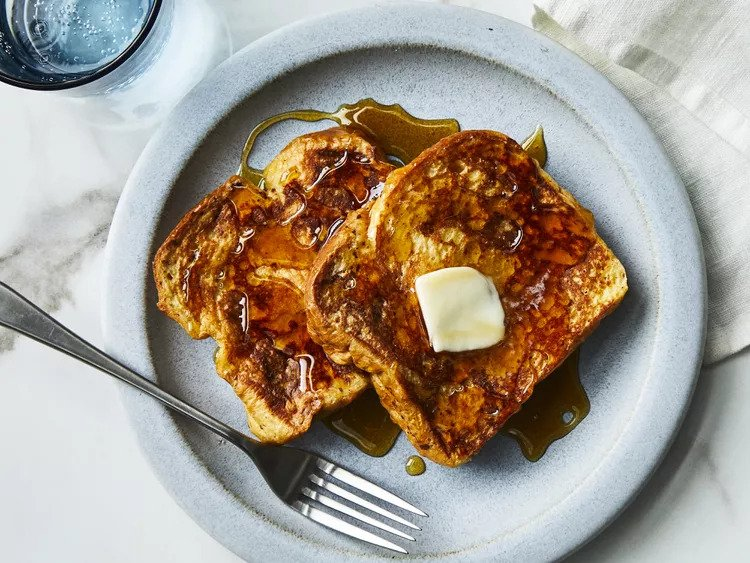

French Toast

French toast recipe containing only a few simple ingredients.
French toast is an egg and milk mixture that is absorbed into sliced bread and cooked on a well oiled skillet. Traditionally French toast is made from stale bread but any sliced bread will do.
The ingredients are simple and easy to substitute based on dietary restrictions or what you have available in the kitchen.
Ingredients
- 6 slices of bread
- 2 eggs
- 2/3 cup milk
- 1 tsp vanilla extract
- 1/4 tsp cinnamon
- salt to taste
- 1 tbsp unsalted butter
- Maple syrup
Steps
- Whisk milk, eggs, vanilla, cinnamon, and salt together in a shallow bowl.
- Lightly butter a skillet over medium-high heat.
- Dunk bread into egg mixture, soaking both sides.
- Cook on skillet until golden, 3-4 minutes per side.
- Serve hot.